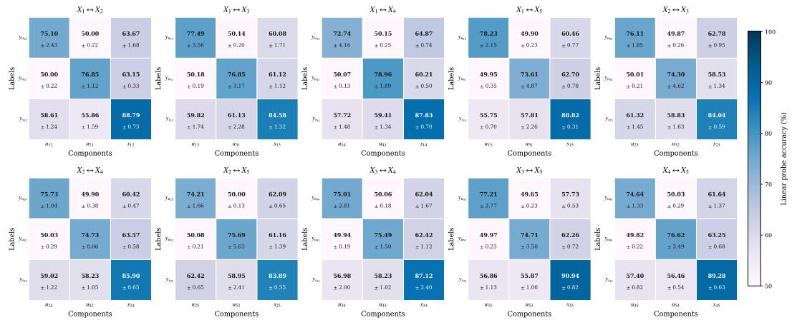

今日主线 · arXiv + ICML 2026
Geometry-Preserving Unsupervised Alignment for Heterogeneous：用无监督正交映射连接 VFM 几何空间与 VLM 语义空间，是今天最直接服务通用视觉表征融合的论文
用无监督正交映射连接 VFM 几何空间与 VLM 语义空间，是今天最直接服务通用视觉表征融合的论文。

用无监督正交映射连接 VFM 几何空间与 VLM 语义空间，是今天最直接服务通用视觉表征融合的论文。
P0
高相关；详见方法、贡献和实验边界。
方法：用无监督正交映射连接 VFM 几何空间与 VLM 语义空间，是今天最直接服务通用视觉表征融合的论文
 P0
P0
高相关；详见方法、贡献和实验边界。
方法：给 CLIP/SigLIP 等 VLM 表征提供可解释的差异发现和对齐工具，适合作为 foundation feature 诊断方法
 P0
P0
高相关；详见方法、贡献和实验边界。
方法：BabyCL 用单遍时间流、视觉表征学习和图文对比损失模拟真实连续经验，比离线 shuffle 训练更接近通用学习设定
 P1
P1
高相关；详见方法、贡献和实验边界。
方法：从正样本采样 support 条件解释 contrastive SSL 何时能恢复 latent geometry，补足经验方法的理论边界

P1高相关；详见方法、贡献和实验边界。
方法：面向多于两种模态的自监督解耦表示，直接处理共享因子与模态特异因子的可扩展分解